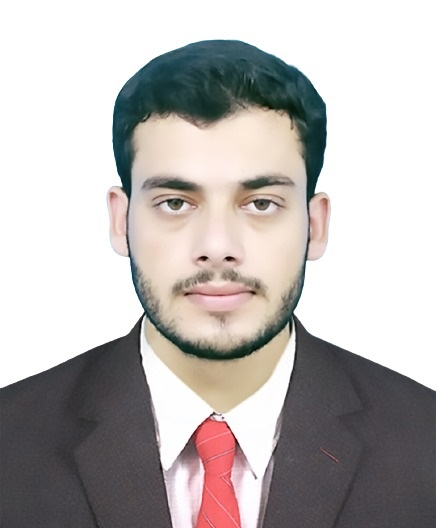
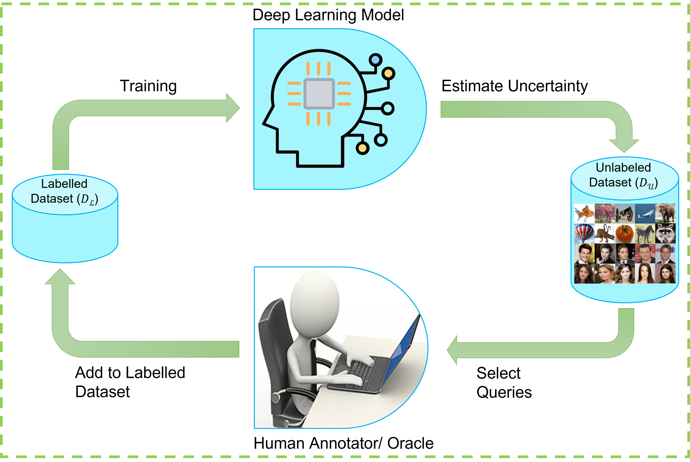
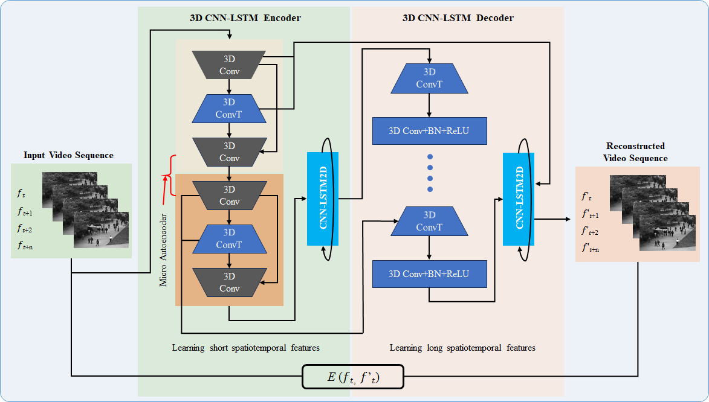
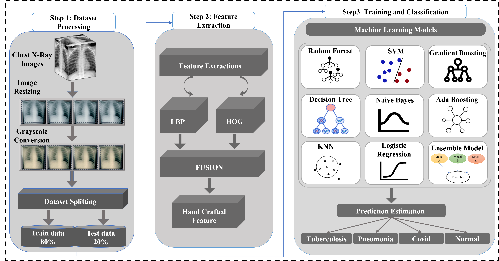
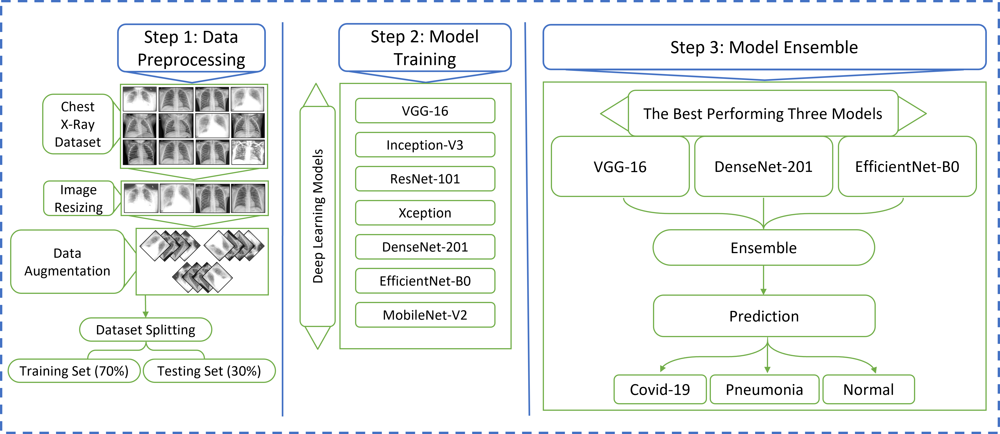
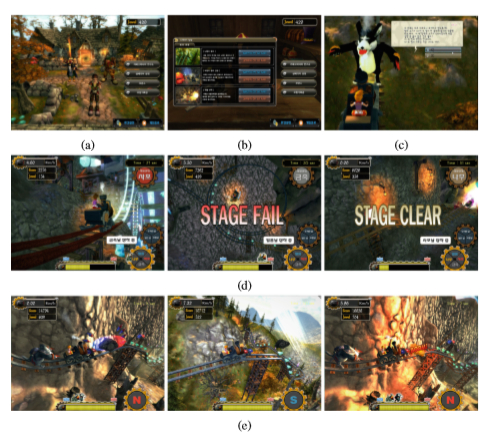
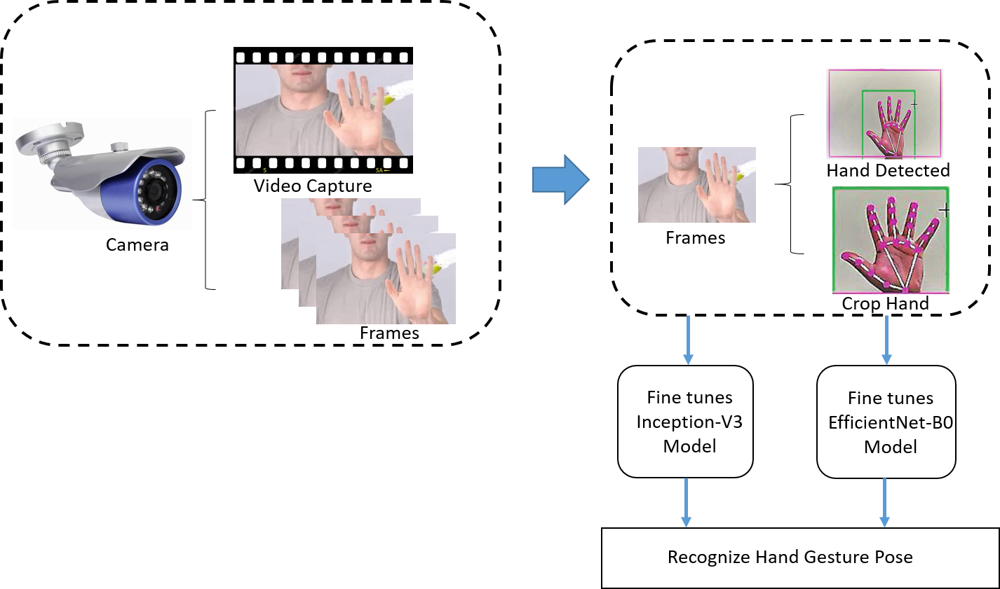
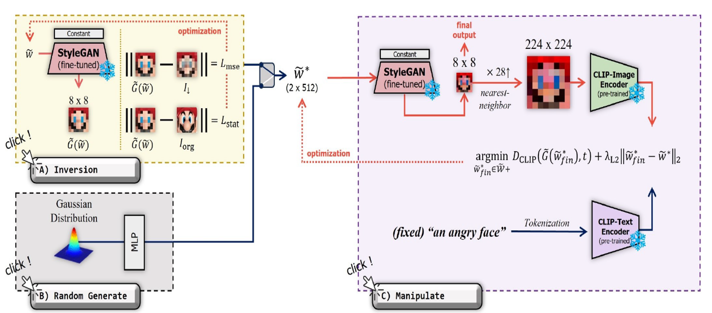

I received a bachelor's degree in computer science from Islamia College, Peshawar, Pakistan, advised by Prof. Mohammad Sajjad. Currently, I am working as a research assistant at the Graphic Realization Lab (GR Lab). My research interests include video analysis, medical image analysis, image segmentation, object detection, image processing, computer vision, machine learning, and deep learning. Feel free to contact me if you are interested in research collaborations in the relevant areas.
Contact: sareerulamin320@ *at* gmail.com
News & Activities
- December 2023: Our paper "Minecraft-ify: Minecraft Style Image Generation with Text-guided Image Editing for In-Game Application" got accepted in NeurIPS 2023 Workshop on Machine Learning for Creativity and Design, 2023. [Link]
- October 2023: Our paper "Deep learning based active learning technique for data annotation and improve the overall performance of classification models" was accepted to Expert Systems with Applications, available here
- April 2023: Our "An Efficient Attention-Based Strategy for Anomaly Detection in Surveillance Video" got published
- July 2022: I attended Platcon2022 conference at Jeju Island, Republic of Korea
- March 2022: I joined Graphics Realization Lab, Department of Computer Science and Engineering, Chung-Ang University as a Research Assistant Professor
- December 2021: I won Chung‑Ang University Young Scientist Scholarship (CAYSS) award
Publications
|  |
Deep learning based active learning technique for data annotation and improve the overall performance of classification models SAREER UL AMiN, Adnan Hussain, Bumsoo Kim, Sanghyun Seo* Expert Systems with Applications, 2023. [IF : 8.66, Rank Q1] [Link] |
|  |
Video Anomaly Detection Utilizing Efficient Spatiotemporal Feature Fusion with 3D Convolutions and LSTM Modules SAREER UL AMiN, BUMSOO KiM, YONGHOON JUNG, SANGHYUN SEO, AND SANGOH PARK* Advanced Intelligent Systems, 2023. [IF : 7.4, Rank Q1] [Link] |
|  |
An automated chest X-ray analysis for COVID-19, tuberculosis, and pneumonia employing ensemble learning approach SAREER UL AMiN, Sher Taj, Adnan Hussain, Sanghyun Seo* Biomedical Signal Processing and Control, 2023. [IF : 5.1, Rank Q1] [Link] |
 |
An Efficient Attention-Based Strategy for Anomaly Detection in Surveillance Video SAREER UL AMiN, Yongjun Kim, Irfan Sami, Sangoh Park, Sanghyun Seo* Computer Systems Science and Engineering, 2023. [IF : 4.397, Rank Q1] [Link] |
|  |
An Automated Chest X-Ray Image Analysis for Covid-19 and Pneumonia Diagnosis using Deep Ensemble Strategy SAREER UL AMiN, Adnan Hussain, Hunjoo Lee, Asma Khan, Noreen Fayyaz Khan, Sanghyun Seo* IEEE Access, 2023. [IF : 3.9, Rank Q2] [Link] |
 |
EADN: An Efficient Deep Learning Model for Anomaly Detection in Videos SAREER UL AMiN, Mohib Ullah, Muhammad Sajjad*, Faouzi Alaya Cheikh, Mohammad Hijji, Abdulrahman Hijji, Khan Muhammad* Mathematics, 2022. [IF : 2.592, Rank Q1] [Link] |
|  |
Serious games in science education. A systematic literature review Mohib Ullah*, SAREER UL AMiN, Muhammad Munsif, Utkurbek Safaev, Habib Khan, Salman Khan, Habib Ullah Virtual Reality & Intelligent Hardware , 2022. [Link] |
 |
Convergence Enhancement of Super-Twisting Sliding Mode Control Using Artificial Neural Network for DFIG-Based Wind Energy Conversion Systems Irfan Sami, Shafaat Ullah, SAREER UL AMiN, Ahmed Al-Durra, Nasim Ullah, Jong-Suk Ro* IEEE Access , 2022. [IF : 3.9, Rank Q2] [Link] |
|  |
An Efficient and Robust Hand Gesture Recognition System of Sign Language Employing Finetuned Inception-V3 and Efficientnet-B0 Network Adnan Hussain, SAREER UL AMiN, Muhammad Fayaz, Sanghyun Seo* Computer Systems Science and Engineering, 2023. [IF : 4.397, Rank Q1] [Link] |
|  |
Minecraft-ify: Minecraft Style Image Generation with Text-guided Image Editing for In-Game Application Bumsoo Kim, Sanghyun Byun, Yonghoon Jung, Wonseop Shin, SAREER UL AMiN, Sanghyun Seo* NeurIPS 2023 Workshop on Machine Learning for Creativity and Design, 2023. [Link] |
Conferences Attended
|
An attention Based Deep Learning Approach for Video Anomaly Detection, 2022 Platcon2022, Jeju Island, Republic of Korea (ETRI2021) |
|
Detection of Pine Wilt Disease Using Lightweight Deep Learning Algorithms, 2022 Platcon2022, Jeju Island, Republic of Korea (KFS2021) |
|
Minecraft‑ify: Minecraft Style Image Generation with Text‑guided Image Editing for In‑Game Application, 2022 NeurIPS 2023 Workshop on Machine Learning for Creativity and Design, New Orleans, US (NRF) |
Work Experience
- 2022-Present - [Research Assistant, Graphics Realization Lab, Department of Computer Science and Engineering, Chung-Ang University.
- 2021-2022 - [Lab Coordinator, Digital Image Processing Lab, Department of Computer Science, Islamia College University Peshawar.
- 2018-2022 - [Research Assistant, Digital Image Processing Lab, Department of Computer Science, Islamia College University Peshawar.
Honors & Awards
- 2022-2024 - [CAYSS Scholar, Chung‑Ang University Young Scientist Scholarship (CAYSS) award.
- 2023 - [Research Grant, Research funding support by Korea Government Ministry of Science and ICT (MSIT) under the National Research Foundation of Korea (NRF) grant.
- 2023 - [Research Grant, Research funding support by the Ministry of Culture, Sports, and Tourism under the Korea Creative Content Agency’s Culture Technology R&D Program.
- 2019 - [Laptop Award, Prime Minister’s Youth Program.
Academic Service
As a Reviewer:
- Expert Systems with Applications
- Biomedical Signal Processing and Control
- IEEE Access
- Computer Systems Science and Engineering
- Intelligent Automation and Soft Computing
- Computer Systems Science and Engineering